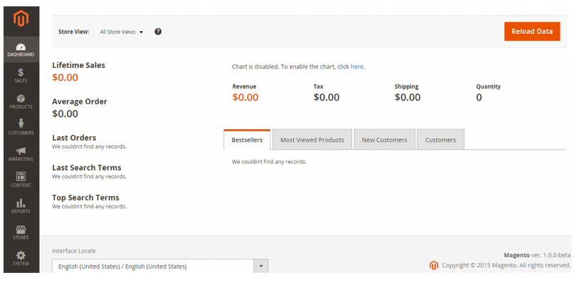
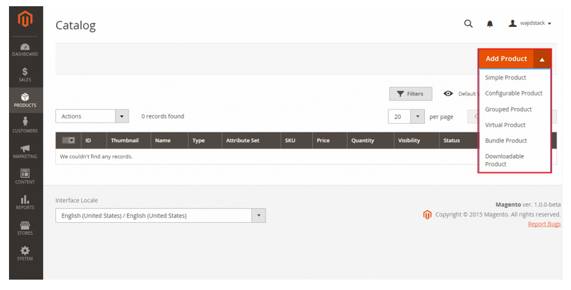
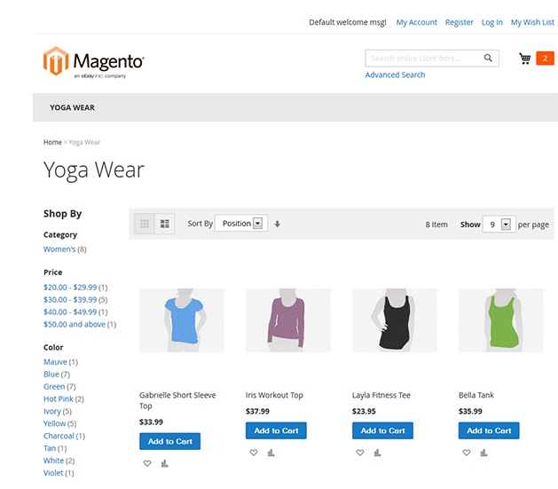

Usabilidades e Casos reais
Segundo a International Organization for Standardization,
usabilidade é a medida pela qual um produto pode ser usado por pessoas específicas para alcançar objetivos específicos de modo efetivo, com eficiência e satisfação em um contexto de uso específico (ISO 9241-11).
Ou seja, a usabilidade é um atributo de qualidade que permite verificar se um produto é fácil de usar.
- Aprendizagem: Foi fácil para o usuário acessar e navegar na sua loja virtual Magento?
- Satisfação: A navegação da sua loja é agradável?
- Memorização: Depois de algum tempo sem acessar sua loja Magento, o usuário consegue lembrar os passos que realizou no último acesso?
- Robustez: Quantos e quais erros os usuários cometem e como conseguem recuperar?
- Eficiência: Depois do primeiro acesso, o usuário consegue encontrar rapidamente o que procura?
BACKEND MAIS FÁCIL PARA O USUÁRIO
A UI backend está mais fácil de usar. Como já evidenciado pela imagem abaixo, usuários agora podem ver dentro de cada loja diretamente do Painel, utilizando o Filtro de Escopo (Scope Filter). SISTEMA DE MENUS MAIS FÁCIL PARA O USUÁRIO
O framework de menus está agrupado em 2 capacidades administrativas: eCommerce e Sistema. Todos os menus são incluidos em sua loja online, por exemplo, Produto, Marketing, Conteúdo, Relatório, etc. Esses menus estão disponíveis em um estilo simples de menu que é mais organizado e mais fácil para o usuário.INTERFACE PÁGINA DE PRODUTO
A administração de produto também foi simplificada. Agora, adicionar um produto ficou mais facil. A UI do Magento 2 vem com vários templates de produto pré-configurados. Com isso, é possível criar lojas de qualquer tamanho e escopo. Você pode facilmente servir tanto produtos simples e baixáveis pela mesma loja sem fazer qualquer modificação nas configurações vigentes. MELHORIAS FRONTEND
Utilizando o Black Theme como ponto inicial é uma grande melhoria para o frontend do Magento 2. Ajuda a facilitar para os engenheiros de frontend ao oferecer peças/partes do tema. Isso oferece uma gama de possibilidades para que os engenheiros possam incluir ferramentas mais específicas de customização de acordo com as necessidades do projeto.

Casos Reais
Drogasil